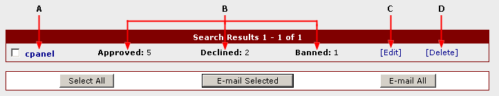

Introduction
AutoGallery SQL allows you to create any number of control panel accounts, each with their own access privileges. This will allow you to maintain complete
administrative control, while also having other people login to process your gallery submissions. Control panel accounts can be added, updated, or
deleted at any time by a control panel account holder with the necessary privileges.
You should at least change the password of the default control panel account that is created when AutoGallery SQL is installed. It is highly recommended
that you create a new account and delete the default account completely for security purposes. When selecting a new password, you should try to use
a combination of letters, numbers, and symbols - this will give you a more secure password.
First Time User
If you just installed AutoGallery SQL and this is the first time you have used it, you will want to at least change your control panel password now.
To change the password, you will need to click on the 'Manage Accounts' link in the 'Control Panel Accounts' section of the control panel menu. This
will bring you to a page where you can view all of the current control panel accounts. Since you are a first time user, only the admin account should
appear in this list. You can click on the [Edit] link to update that account with a new password. When you click on the [Edit] link a window will
appear where you can edit the account information. Change the Password field to the new password you want to use, and then press the Update Account
button.
For enhanced security it is recommended that you create a new control panel account with a username other than 'admin'. Make sure when you create the
account that you select for it to have all privileges. Once the account has been created you can delete the default 'admin' account permanently.
Adding
To add a control panel account click on the Add Account link in the Control Panel Accounts section of the control panel menu. AutoGallery SQL will load a page
where you will be able to enter the necessary information to create an account. Each of the main fields is described below.
Account ID - This is the username that will be used to login to the control panel
Password - This is the password that will be used with the username to login to the control panel.
E-mail - The e-mail address that should be associated with this control panel account.
No E-mail/Send E-mail - Select Send E-mail from the drop down box to send a welcome e-mail to the new account.
Once you have the main fields filled in, it is time to select the access privileges. Each item should be self-explanatory. Putting a check in the box
next to any of the items means that the account holder will have access to that feature of the control panel. If there is no check, the account holder
will not have access to that feature. The All Privileges option is a special option which automatically gives the account holder access to all features
of the control panel. You should always have at least one control panel account which has All Privileges.
Finally, when all of the options have been filled in how you want them, press the Add Account button. The new account will be created and you will
be returned to the Add Account page where you can create more accounts if you wish. Immediately after addition the new control panel account will
be active and the user can login.
Managing
To manage your control panel accounts click on the Manage Accounts link in the Control Panel Accounts section of the control panel menu. AutoGallery SQL will load
a page where you will be able to view, search, edit, and delete your control panel accounts. Figure 1 shows what you will see when managing your control panel
accounts.

Figure 1
Clicking on the Account ID (A) will bring up your e-mail client so you send an e-mail to the account holder. AutoGallery SQL keeps track of the number of galleries
that a control panel account has approved, rejected, and blacklisted. You can see this information (B) displayed in the control panel account management
interface. If you would like to e-mail one or more of the control panel accounts, put a check in the box next to the Account ID. You can then press the
E-mail Selected button to bring up AutoGallery SQL's e-mail interface. To e-mail all of the control panel accounts, press the E-mail All button.
Updating
To edit a control panel account click on it's edit link (C). A window will pop-up with the account editing interface. You can make any changes to the
acount that you wish. Once you are completed making the changes you want, press the Update Account button. AutoGallery SQL will update the account with the
new information and display a confirmation message in the pop-up window. You can close the pop-up window and continue with your next task.
Deleting
To delete a control panel account click on it's delete link (D). AutoGallery SQL will ask for confirmation that you want to delete the account. Pressing Ok will
delete the control panel account, and the username and password for that account will no longer be active. Deleting a control panel account will not affect
any of the galleries that the account holder approved, rejected, or blacklisted.
Be careful when deleting accounts! If you delete all of your accounts, you will no longer be able to access the control panel.
Also make sure that you always have at least one account with All Privileges. If you don't have an account with All Privileges you may not be able to create
new accounts that do have All Privileges and you will be locked out of some control panel features.